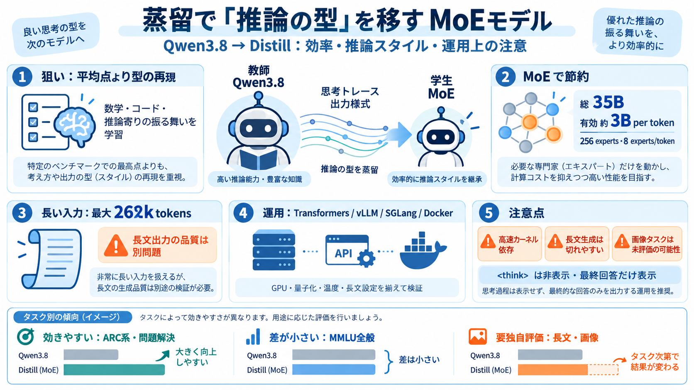

Qwen3.6-35B-A3B vs Qwen3.8 Max: Benchmarks, Pricing & Which Is Better in 2026
overall performance matters — it scores 51.9 and ranks #11 on LLM Stats your work emphasizes reasoning and coding — it …

overall performance matters — it scores 51.9 and ranks #11 on LLM Stats your work emphasizes reasoning and coding — it …
Qwen3.6-35B-A3B 43.99/100 050100 Estimated· Public rank #161 90% interval 37.7–50.2 # Qwen3.6-35B-A3Bvs Qwen3.8-Fla…
Qwen3.6-35B-A3B scores MMLU-Redux: 93.3%, MMBench-V1.1: 92.8%, AI2D: 92.7%, AIME 2026: 92.7%, RefCOCO-avg: 92.0%. Qwen3.…
How to use empero-ai/Qwen3.8-9B-Distill-GGUF with Hermes Agent: ##### Start the llama.cpp server ##### Configure Herme…
Context length 262K 262K Reasoning True True Input modalities Text, Image, Video, Audio Text, Image, Video Outp…